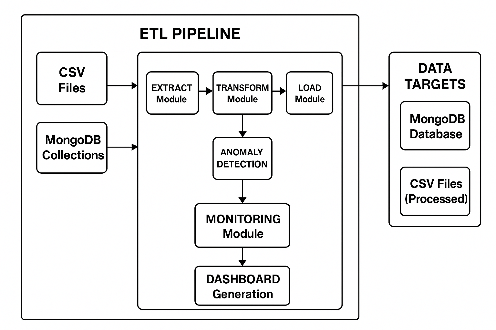
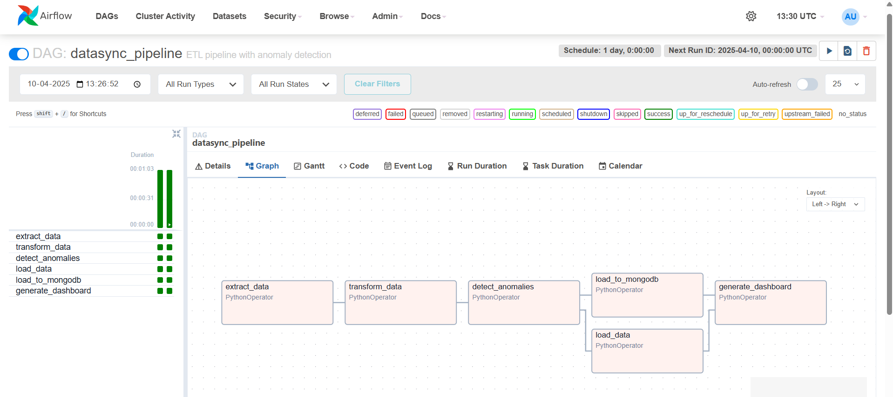

Key Features
Data Extraction
Extract data from multiple sources including CSV files and MongoDB collections
Data Transformation
Clean, normalize, and prepare data with customizable transformation rules
Anomaly Detection
Automatically identify anomalies using statistical methods like Z-score analysis
Data Loading
Load processed data to MongoDB and CSV files with error handling
Workflow Automation
Orchestrate the entire ETL process using Apache Airflow
Monitoring Dashboard
Track pipeline performance with customizable reports and visualizations
Architecture

The DataSync Pipeline follows a modular architecture with these key components:
- Extract Module: Handles data extraction from various sources
- Transform Module: Applies data transformations and cleaning operations
- Anomaly Detection: Identifies outliers and unusual patterns
- Load Module: Manages data loading to target destinations
- Monitor Module: Tracks pipeline performance and generates reports
Demo Screenshots

Airflow DAG view showing the pipeline workflow

Pipeline execution with task status

Anomaly detection results showing outliers in the data

Performance dashboard with key metrics
Code Samples
def extract_data(**kwargs):
"""Extract data from sample CSV file"""
data_dir = os.path.join(os.environ.get('AIRFLOW_HOME', ''), 'data')
os.makedirs(data_dir, exist_ok=True)
# Create sample data file if it doesn't exist
sample_file = os.path.join(data_dir, 'sales.csv')
if not os.path.exists(sample_file):
# Generate sample data
df = generate_sample_data(1000)
df.to_csv(sample_file, index=False)
# Read the data
df = pd.read_csv(sample_file)
# Save to intermediate file for next task
df.to_json(f"{data_dir}/extracted_data.json", orient="records")
return f"Extracted {len(df)} records"def transform_data(**kwargs):
"""Transform the extracted data"""
data_dir = os.path.join(os.environ.get('AIRFLOW_HOME', ''), 'data')
# Read the extracted data
df = pd.read_json(f"{data_dir}/extracted_data.json", orient="records")
# Apply transformations
# 1. Drop duplicates
df = df.drop_duplicates()
# 2. Fill missing values
for col in df.columns:
if pd.api.types.is_numeric_dtype(df[col]):
df[col] = df[col].fillna(df[col].mean())
else:
df[col] = df[col].fillna('Unknown')
# 3. Add metadata
df['processed_at'] = datetime.now().isoformat()
# Save transformed data
df.to_json(f"{data_dir}/transformed_data.json", orient="records")
return f"Transformed {len(df)} records"def detect_anomalies(**kwargs):
"""Detect anomalies in the transformed data"""
data_dir = os.path.join(os.environ.get('AIRFLOW_HOME', ''), 'data')
# Read the transformed data
df = pd.read_json(f"{data_dir}/transformed_data.json", orient="records")
# Detect anomalies using z-score method
anomalies = pd.DataFrame()
threshold = 3.0 # z-score threshold
numeric_cols = df.select_dtypes(include=[np.number]).columns
for col in numeric_cols:
# Calculate z-score
mean = df[col].mean()
std = df[col].std()
if std > 0:
z_scores = (df[col] - mean) / std
# Flag anomalies where z-score exceeds threshold
col_anomalies = df[abs(z_scores) > threshold].copy()
if not col_anomalies.empty:
col_anomalies['anomaly_column'] = col
col_anomalies['z_score'] = z_scores[abs(z_scores) > threshold]
col_anomalies['detected_at'] = datetime.now().isoformat()
anomalies = pd.concat([anomalies, col_anomalies])
# Save anomalies
if not anomalies.empty:
anomalies.to_json(f"{data_dir}/anomalies.json", orient="records")
return f"Detected {len(anomalies)} anomalies"
else:
# Create empty file if no anomalies
with open(f"{data_dir}/anomalies.json", 'w') as f:
f.write('[]')
return "No anomalies detected"def load_to_mongodb(**kwargs):
"""Load data to MongoDB database"""
try:
from pymongo import MongoClient
data_dir = os.path.join(os.environ.get('AIRFLOW_HOME', ''), 'data')
# Read the transformed data
df = pd.read_json(f"{data_dir}/transformed_data.json", orient="records")
# Convert to dict for MongoDB
records = df.to_dict('records')
# Connect to MongoDB
client = MongoClient('mongodb://localhost:27017/')
db = client['datasync_db']
collection = db['processed_data']
# Insert data
if records:
collection.insert_many(records)
return f"Loaded {len(records)} records to MongoDB"
except Exception as e:
return f"Error loading to MongoDB: {str(e)}"Tech Stack
Python

Apache Airflow
MongoDB

Pandas
NumPy